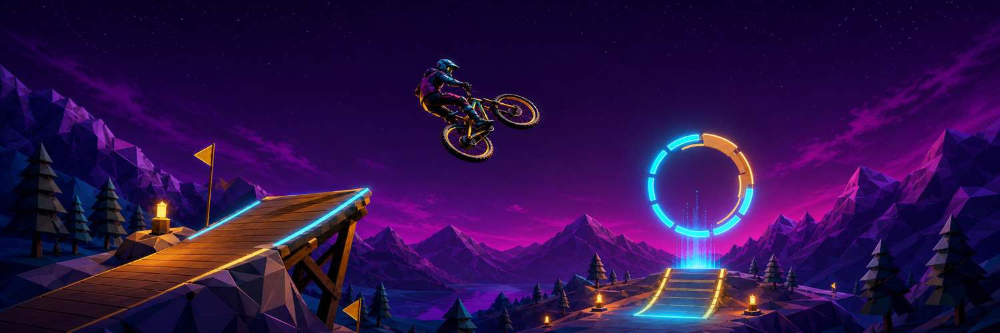

Live 60 FPS Engine · Reddit DevvitRedline Rider — 3D Downhill Physics Engine & Reddit App
Single-file, zero-dependency 3D survival biking engine running deterministic procedural terrain generation via seeded mulberry32 noise. Features real-time Rapier 3D rigid-body capsule physics, custom procedural GLSL ShaderMaterial for the Overseer Eye with animated fibrous veins, and an adaptive quality engine maintaining sub-21ms budgets for guaranteed 60 FPS. Ported to a native Reddit Devvit Web App.